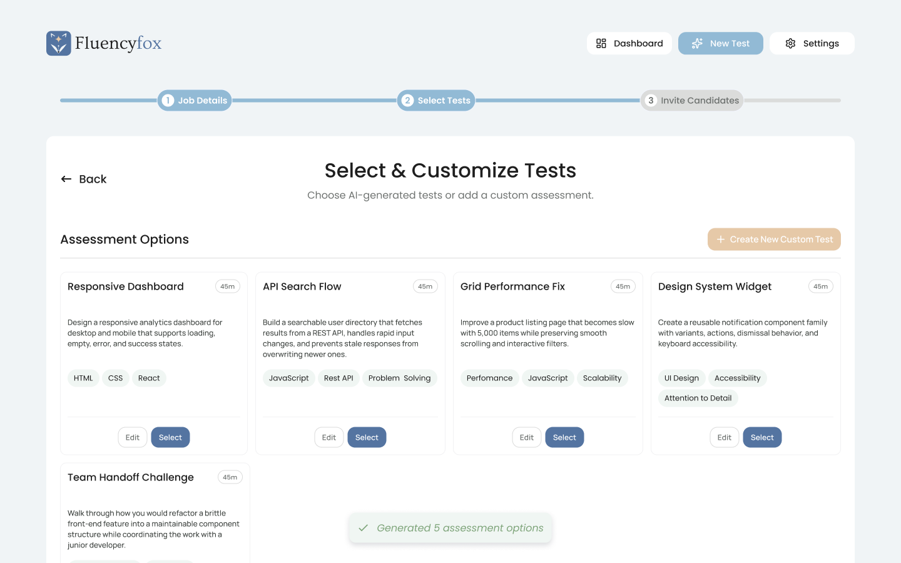
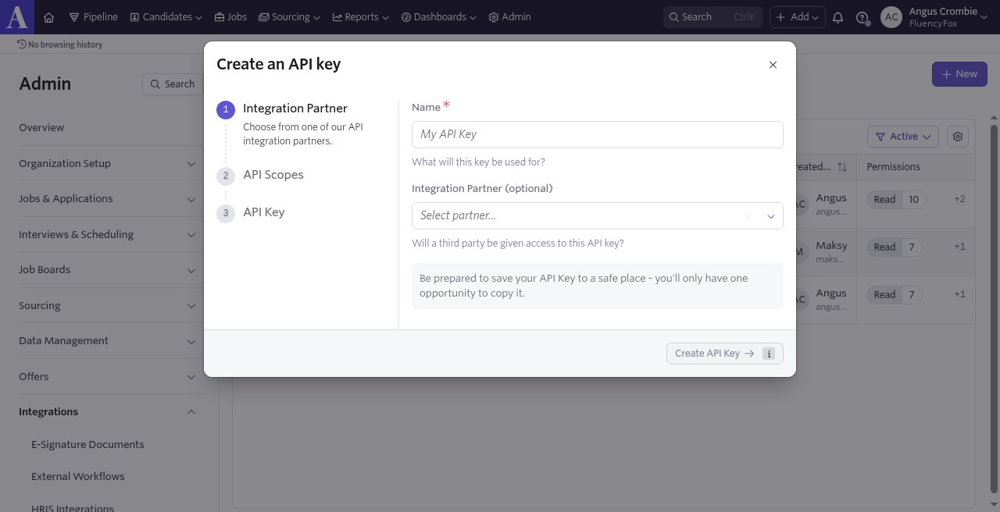
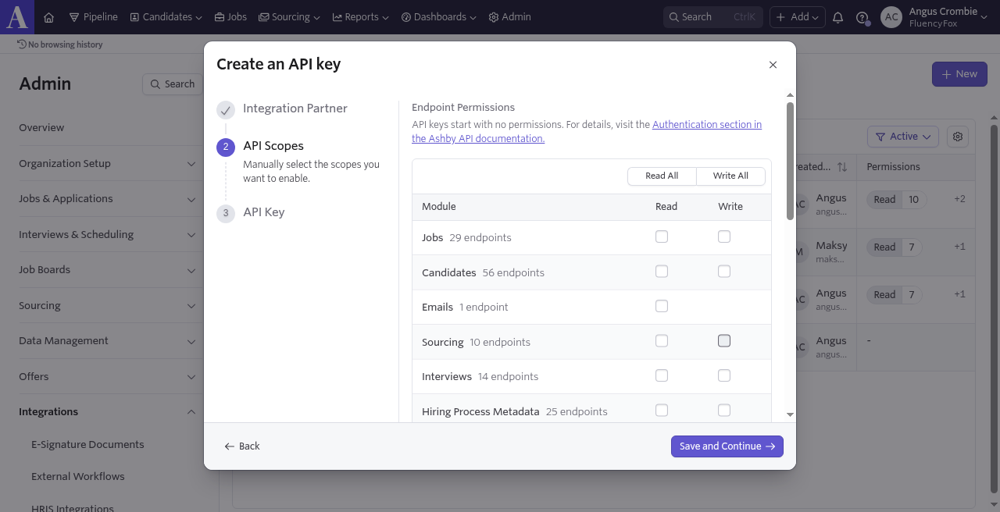
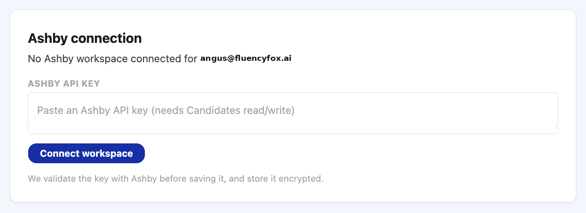
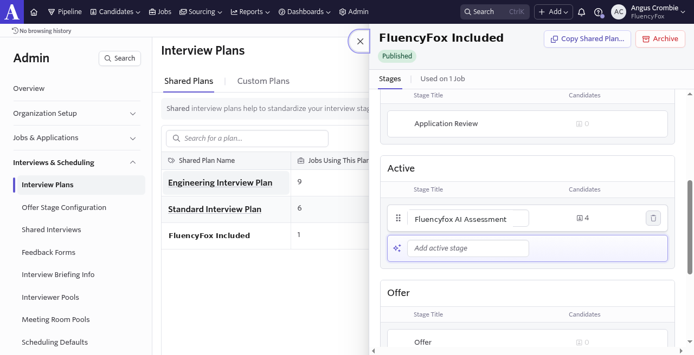

Ashby integration
Connect Ashby to FluencyFox
Setup guide for hiring teams using Ashby
FluencyFox is an AI fluency assessor for hiring. Candidates complete a real task on the tools they would use on the job. You see how they think, narrate their work, and collaborate with AI.
Connect Ashby so assessments trigger from your pipeline and results write back to the candidate. Invite from Ashby or FluencyFox; activity syncs either way. When a candidate finishes, FluencyFox posts their score, notes, and an assessment link into Ashby Notes.

FluencyFox generates assessment options for a role. After you connect Ashby, jobs can seed job details before this step.
Prerequisites
- You must be an Organization Admin in Ashby (you can see the Admin tab).
- You need a FluencyFox account at app.fluencyfox.ai (Google SSO).
1. Create an Ashby API key
- In Ashby, go to Admin → Integrations → API Keys.
- Click + New and name it something clear, for example FluencyFox.
- Enable only these permissions:
- Jobs: Read
- Candidates: Read and Write
- Api Keys: Read
- Create the key, copy it, and store it safely, because Ashby only shows it once.

Admin → Integrations → API Keys → + New. Name the key, then continue to scopes.

On API Scopes, enable Jobs Read, Candidates Read + Write, and Api Keys Read. Leave other modules off (screenshot shows the blank scopes list before those checks).
Candidates write lets FluencyFox post invite links and scored results. Jobs read supports job autofill. Api Keys read is required for the connection.
2. Connect Ashby in FluencyFox
- Sign in to FluencyFox and open Settings.
- Under Ashby integration, click + Connect Ashby.
- Paste your Ashby API key into ASHBY API KEY.
- Click Connect workspace.

Paste the key and click Connect workspace. FluencyFox validates the key before saving and stores it encrypted.
Once connected, Ashby jobs can autofill the role and job description when you create a test. You can still paste a custom JD.
3. Add the trigger stage in Ashby
FluencyFox listens for a stage change into a stage named exactly:
Fluencyfox AI Assessment
Match it character for character (capital A in Assessment). Stages live on an interview plan, not under Admin → Organizational settings → Custom fields.
- Go to Admin → Interviews & Scheduling → Interview Plans, then open the shared plan used by your jobs (or the job’s custom interview plan).
- Under Active stages, click Add Active Stage (Ashby may show “Add active stage”).
- Type Fluencyfox AI Assessment exactly and save.
- Alternative: open the job → its interview plan → same Add Active Stage (or rename an existing stage) → Save Edits.
- Move candidates into that stage when you want them assessed.

Admin → Interviews & Scheduling → Interview Plans → open a plan → Add active stage. Name it exactly Fluencyfox AI Assessment.
The trigger needs a stage change. If a candidate is created already in that stage, move them out and then back in so the event fires.
What posts back to Ashby
| When | What appears in Ashby |
|---|---|
| Candidate moves into Fluencyfox AI Assessment | Assessment invite link in the candidate’s Notes (near-immediate) |
| Candidate completes the assessment | Score, notes, and assessment link in the same Notes feed |
FluencyFox does not auto-email the candidate. Copy the invite from Notes into your own Ashby message or email if you want to send it.
Need help?
If the key fails validation, the stage name does not trigger, or Notes are not updating, contact your FluencyFox CSM or support via your usual FluencyFox channel.